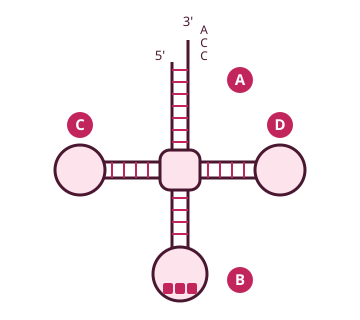

Los nucleótidos se unen por enlaces fosfodiéster (5'→3').
ADN (Watson y Crick): doble hélice dextrógira, cadenas antiparalelas y complementarias, bases en el interior.
A=T (2 puentes de H) y G≡C (3 puentes de H). Chargaff: A = T y G = C.
Al desnaturalizarse, el ADN absorbe más luz UV a 260 nm (efecto hipercrómico). La forma Z es levógira.
Nucleosoma: octámero de histonas (2 × H2A, H2B, H3, H4) + ADN. La H1 queda fuera. ARN: ARNm (mensaje), ARNt (trae los aminoácidos), ARNr (ribosomas).
1. Estructura del ADN Muy importante
Los nucleótidos se unen mediante enlaces fosfodiéster entre el C3' de un azúcar y el C5' del siguiente. Cada cadena tiene un extremo 5' (fosfato) y otro 3' (OH).
Modelo de Watson y Crick (forma B):
Doble hélice dextrógira.
Dos cadenas antiparalelas (una 5'→3' y la otra 3'→5') y complementarias.
Las bases, en el interior; el esqueleto de fosfato y desoxirribosa, en el exterior.
≈ 10 pares de bases por vuelta. Se basó en las imágenes de difracción de rayos X de Rosalind Franklin.
Como una purina (2 anillos) siempre se empareja con una pirimidina (1 anillo), la hélice tiene un diámetro regular.
Alterna un surco mayor y un surco menor, por donde se puede acceder a las bases.
Se estabiliza sobre todo por los puentes de H entre bases. El esqueleto externo le da solubilidad y acidez.
La desoxirribosa (un OH menos) hace al ADN más estable, aunque menos reactivo, que el ARN.
Pareja
Puentes de hidrógeno
Consecuencia
A = T
2
Zonas ricas en A-T: más débiles, se separan antes (orígenes de replicación)
G ≡ C
3
Zonas ricas en G-C: más estables, necesitan más temperatura para separarse
★ Clave de examen — reglas de Chargaff
En un ADN bicatenario A = T y G = C (purinas = pirimidinas). Ejemplo: si A = 30 %, entonces T = 30 %, G + C = 40 % y G = 20 %.
Formas del ADN
Forma
Giro
Nota
B
Dextrógira
La fisiológica (modelo de Watson y Crick)
A
Dextrógira
Diferencias mínimas con la B (más compacta)
Z
Levógira
Gira hacia la izquierda, en zig-zag
2. Desnaturalización e hibridación Muy importante
Desnaturalización: pérdida de la doble hélice (estructura secundaria). La temperatura, el pH o agentes biológicos rompen los puentes de hidrógeno y separan las dos cadenas (no se rompen los enlaces fosfodiéster).
Efecto hipercrómico: las bases absorben luz UV a 260 nm. En la doble hélice están protegidas y absorben menos; al separarse quedan expuestas y la absorción aumenta. Así se detecta la desnaturalización.
Cuanto más G-C, mayor es la temperatura de desnaturalización (Tm).
Renaturalización / hibridación: al enfriar, las cadenas complementarias vuelven a unirse. Es la base de la PCR y de las sondas (tema 17).
Ampliación
Horquillas y cruces. Una cadena sencilla con secuencias autocomplementarias puede plegarse sobre sí misma (horquilla). Las secuencias palindrómicas (se leen igual en los dos sentidos) pueden formar estructuras cruciformes.
3. Empaquetamiento: cromatina Muy importante
Histonas: proteínas básicas; al menos el 20 % de sus aminoácidos son lisina y arginina (carga +), que se unen al ADN (ácido, carga − por los fosfatos) mediante interacciones iónicas. Su unión es el primer paso del empaquetamiento.
Predominan las hélices α; no tienen triptófano ni cisteína. Tipos según la electroforesis: H1, H2A, H2B, H3, H4 (y H5, variante que a veces sustituye a la H1).
Nucleosoma: octámero de histonas = 2 × H2A, 2 × H2B, 2 × H3 y 2 × H4, con el ADN dando 1 vuelta y ¾ a su alrededor.
ADN enlazante (linker): tramo libre entre nucleosomas; más flexible y expuesto (ahí cortan las enzimas).
H1: queda fuera del octámero; une el nucleosoma con el ADN enlazante y estabiliza el solenoide (cada 6-7 nucleosomas se forma una vuelta).
Niveles: collar de perlas (nucleosomas) → solenoide → bucles → cromosoma (máxima condensación en la metafase).
Histona
Característica
H1
La más larga (> 200 aa), la más diferente entre especies y la que más aminoácidos modificados tiene. Fuera del nucleosoma
H3 y H4
Las más conservadas entre especies
H2A
La que menos aminoácidos modificados tiene
4. ARN Muy importante
Diferencias con el ADN: monocatenario (5'→3'), lleva ribosa y uracilo en lugar de timina, y no tiene una estructura definida (zonas parcialmente helicoidales).
Tipo
Función
ARNm
Lleva la información del ADN al ribosoma. Vida corta
ARNt
Transporta los aminoácidos al ribosoma; uno específico para cada aminoácido
ARNr
Principal componente de los ribosomas; el más abundante
hnRNA
Transcritos primarios: precursores del ARNm
snRNA
Splicing (procesamiento de otros ARN)

ARNt en hoja de trébol. A = brazo aceptor (une el aminoácido en el extremo 3', secuencia CCA). B = brazo del anticodón.
★ Clave de examen
El ARNt tiene forma de hoja de trébol. El aminoácido se une al brazo aceptor, en el extremo 3'. El anticodón es complementario al codón del ARNm.
El ARNt tiene muchas bases modificadas: derivados metilados, pseudouridina (ψ) y dihidrouridina (DHU, la reconoce la aminoacil-ARNt sintetasa).
Eucromatina: poco condensada, genes activos. Heterocromatina: muy condensada, genes inactivos. Las mitocondrias tienen su propio ADN circular, que se hereda de la madre (tema 15). Otros ARN pequeños, como los miARN, regulan la expresión de los genes.